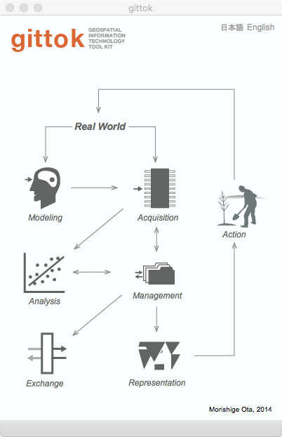
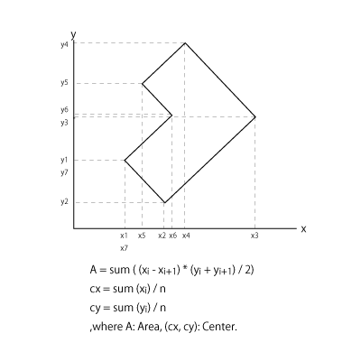
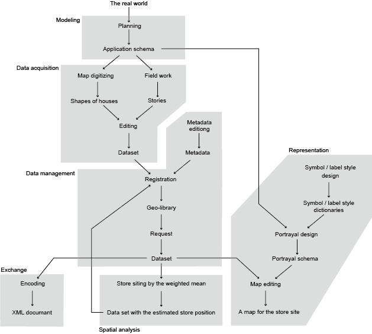

はじめに
gittok (ジートック, ʤiːtɒk) は地理空間情報技術 (Geospatial Information Technology (GIT)) の教育支援ツールです．主に大学生及び，これからこの分野の知識を身につけたいと考えている社会人を，対象としています．このツールは文部科学省科学研究費による『地理情報科学標準カリキュラムに基づく地理空間的思考の教育方法・教材開発研究』プロジェクト（2009-2013, 代表者：浅見泰司（東京大学））の中に設けられたGIT班(班長：久保田光一（中央大学））の研究活動の一環として，太田守重（国際航業）が，班の皆様や関係する方々の協力のもとで開発してきました．
これまで，今日の地理情報技術の知識体系を網羅する教育支援ソフトはほとんどありませんでした．gittokは，日本や海外で行われて来た地理情報科学／技術の知識体系に関する研究の成果をもとにして，全体の構成を設計しています．従って，皆さんは gittok を操作しながら，講義用に用意されたスライド及び，今読んでいるテキストページを学ぶことによって，この分野全体の基礎知識を理解できるようになるでしょう．また，初歩的なものであれば，自分自身の課題解決のために，gittok を役立てることができるようになるでしょう．さらには，ソースコードを参考にして自分自身でアプリケーションを開発したくなるかもしれません．
しかし，gittokは，いわいる地理情報システムではありません．あくまでも，地理情報技術の基礎知識を学ぶためのツールなので，大量のデータを扱うことは想定していませんし，多様な解析や表現の手段を持っている訳ではありません．その代わり，テキストや講義用のスライドをできるだけ丁寧に作り，それぞれの画面操作の背景にある知識の修得が容易にできるようにしています．ですから，gittokは地理情報技術の教科書，と考えていただきたいと思っています．
gittokを起動すると最初に現れるページ（gittokでは操作画面のことをページと呼びます）では，皆さんは以下のことを学びます．まず最初に講義用スライドや．このテキストを読んでから，gittokのWebサイトに示されている実習をすすめていくといいでしょう．
講義用スライド
GITとその歴史
GITの知識体系
GITの利用シーン
タイトルページの操作法
講義用スライド
GITとその歴史
Geospatial Information Technology (GIT)とは，どのような研究分野でしょうか．地球上には，自然・人工を問わず，様々なものごとが生起消滅しています．例えば，日本では地震や台風は頻繁に起きる現象ですが，私たちの生活に大きな影響を与えます．また，環境問題や交通問題など人間の活動に起因する問題が多数あります．これらの現象の多くは，5W1H (where, when, why, who, what, how)をキーワードとする現象です．この中で，特に，「いつどこで」を重視する技術分野としてGITがあります．個人の住環境から，地球及びそれを取り巻く大気圏ぐらいまでのスケールで起きている現象を解明し，私たちの生活をより快適にすることを，この分野は目指しています．いいかえれば，GITは，地球上で生起消滅する現象を理解し，モデル化し，データを収集し，管理し，解析して，われわれにとって価値のある情報を提供するとともに，それを交換・表現し，応用することを通じて，社会に貢献することを目指す工学の分野です．
このような目的を満足するためには，多くの場合，実世界から様々なデータを収集し，処理することが求められますので，情報システムや情報ネットワークの力を借りることが必須になります．地球上の場所と関連付く情報である地理空間情報を扱うシステムは，地理情報システム (GIS : Geographic Information System) と呼ばれてきました．1960年代からアメリカやカナダなどで開発が進められてきましたが，日本においても，1970年代の前半から本格的な研究開発が始まりました．今日ではライフラインの管理，都市計画，環境管理，消防や警察などの行政業務の支援，店舗の立地や商圏分析といった企業活動の支援，そしてカーナビゲーション，レストランやお店の位置情報サービス，ゲームなど，私たちの日常生活でも広く使われるようになっています．さらに今日，GIS といえば地理情報科学 (Geospatial Informartion Science) の略称ともいわれ，地理空間の現象解明や将来予測を目的として，GIT の知識基盤の役割を果たす研究分野と，捉えられています．このような科学技術の 進化を経て，地理情報システムは，アプリケーションとして単体で使うものから，様々な情報システムやサービスに組み込んで使うソフトウェアライブラリや，データ形式の変換，空間解析，地図表現など，さまざまなシーンで使われるソフトウェアツール群に変貌つつあります．しかし反面，この技術の全体像を把握することが困難になりつつあります．そこで， gittok は汎用的な地理情報システムではなく，教育支援のために開発されたツールキットと位置づけ，一つのソフトで知識の全体像を俯瞰できるようにしています．しかし，短い時間で深い学習をすることは困難です．gittok で全てがわかると思ってはいけません．むしろ，学習を通じて自分の興味のあるテーマを見つけ，より深い研究や開発に加わっていただくことが，当方の目論見です．
ところで，gittok の中で使われる専門用語は，基本的に日本工業規格であるJIS X 7100シリーズの用語定義を参考にしています．この規格群は，ほとんどの場合，国際標準化機構 (ISO) が発行している ISO 19100シリーズの地理情報規格と一致します．つまり国際的な標準で使われている定義を使用することになります．中には，皆さんがこれまで学習してきた言葉や定義と，異なる場合があるかも知れませんが，それは学問の分野が細分化されている今日では，よくあることです．本来であれば，研究成果を知識の体系の中に組み入れる過程で，整合を図るべきですが，それぞれの研究者がそれぞれ独自性を主張することが多く，また，他の分野で似たような概念が用語として定義されていることに，気づかないこともあります．しかも，時代と共に言葉とその使い方は変化します．これが，国際的な合意としての公式の規格によりどころを求める理由です．一方国際規格も，定期的に見直しが行われ，時間が経つと，内容が変化します．ただし，変化の履歴は追うことができます．そのようなことを頭の片隅に置いて，言葉の定義に関して疑問が起きたときは，関連する規格やその分野の文献や辞典などを比較検討するといいでしょう．ちなみにJIS X 7100シリーズは，日本工業標準調査会のサイトで閲覧することができます．
GITの知識体系
gittok ではGITの知識体系が含む，6つの知識領域を学ぶことができます．それは，モデリング (Modeling)，データ取得 (Acquisition)，データ管理 (Management)，空間解析 (Analysis)，データ交換 (Exchange)，そして情報表現 (Representation) です．

図１．地理空間情報技術 (GIT) の知識体系
モデリングとは，実世界で起きている様々な現象やものを解釈し，単純化した模型を作ることです．私たちは情報システムの中でそれを使いますので，この模型はフィギュアやプラモデルのような物理的な模型ではなく，現象やものの定義や，そのものがもつ特徴の説明になります．説明は二つの方法ですることができます．一つは，対象となるものが持っている性質はどいういものかを説明するやり方です．もう一つは，その説明に従って人間が見ることができる模型を作ることです．一つの例として，設計図と，それに基づいて作られる製品があります．設計図は説明，製品は説明通りに作られた模型と言えます．GITの世界ではこの模型のことを地理空間データといいます．ここで，模型を作るための説明のことを，一般に概念モデルといいます．地理空間データを作るための概念モデルには、データが目的を満たすための条件が書かれます．例えば，建物の場合，定義は「屋根と壁で区切り，中に人や物を収容する人工の構造物」かも知れませんし，その特徴は，建物の名前，建築年度，形状，場所，そして設計者の名前でなければいけない，ということになります．このような条件の説明を受けた人は，現場にいったりして調査し，説明された通りに対象となる建物のデータを編集して地理空間データとして記録します．集められたデータはコンピュータの中で管理され，必要に応じてキーワードなどを使って検索し交換されます．データを応用する人は，最短経路探索や，お店の勢力圏分析など，地理空間データ特有の解析を行い，結果を地図として利用者に示したりするでしょう．これら一連の処理は地理空間情報処理と言います．これを可能にする技術がGITです．
GITはGITechnologyですが，似たような言葉として，GIScienceがあります．技術は，その基礎となる科学の知識を，社会に役立つようにする知識や方法を指します．例えば，「都市の中心とは，このようなところである．」という知識を示すのは科学です．その知識を応用して，都市計画に役立てるために中心位置を求める行為を可能にする知識や方法は技術です．今日，技術と科学の境界は曖昧になりつつあると言われています．それは，科学的な知識を応用するための知識の追求も科学だ，と考えることがあるからです．しかし，例えば，地理空間データを生成するためのマニュアルを科学文書だと考える人は少ないでしょう．それは知識の探求の過程を示すのではなく，探求の結果を使う方法を示すからです．技術と科学の関係はデザインとアートの関係に似ているかもしれません．アートは，それが人々の役に立つか，というよりも，人々に感動を与えるかに力点がおかれ，別に役に立たなくてもかまいません．しかし，優れたデザインは，ひとの役に立ち，かつ感動や心地よさを与えます．gittokは，知識を役に立てるための方法を学習するためのソフトですが，技術固有の科学が含まれている可能性はあります．
以下，モデリング，データ取得などについて，もう少し詳しく解説します．
Modeling（モデリング）
モデリングとは，実世界に存在するものごとや，人間が想像したり，予測したり，感じたりするものごとを，抽象化（または概念化）する行為です．抽象化とは，対象となるものの特徴から必要な部分を選択し，それを単純化して表現することです．特にGIT分野では，地球上の空間に分布する現象やものをモデリングの対象にして，その抽象化を行います．これを空間モデリングと呼びます．モデリング作業の結果できるものはモデル，言い換えれば互いに関連を持つ地物 (feature)の集りです．ちなみに地物は，日本工業規格「JIS X 7109: 2009 地理情報ー応用スキーマのための規則」で，以下のように定義されています．
地物 (feature)
実世界の現象の抽象概念 (ISO 19101参照)
注記１ 地物は，型またはインスタンスとして現れる．地物型または地物インスタンスという用語は，いずれか一方だけを意味するときに使うことが望ましい．
注記２ 地物は元来地上の自然物及び人工物を指す用語であるが，この規格では，それ以外の実世界に現れる物事を抽象化した概念も指す．
この中で，ISO 19101はこの定義が参照する国際規格を指します．また注記２に下線が引かれていますが，これは日本工業規格を制定する際に日本で追加された注記であることを示します．
例えば，建物という言葉は実世界に存在するものを抽象化して一言で表す概念を意味する言葉なので，地物型です．建物は人工的に作られた構造物で，人や者を収容する働きをもち，名前，存続期間，そして形状など，それがもつ固有の特徴で説明することができます．このような，地物がもつ特徴のことを地物属性と呼びます．
「あれは建物だ」という表現は，見えているものを型にはめる表現です．一方，その型に当てはめられた個々のもの（個物）は，地物インスタンスといいます．型の場合は，その地物はどのような属性をもつかを示しますし，インスタンスは，属性の値（「名称」は「市ヶ谷レジデンス」，といった具合）で示します．ところで，地物型や型同士の関係を示すモデルを，決められた規則に従って形式的に表現すると，それはスキーマ (schema) と呼ばれます．特にある応用目的をもって作られるスキーマは応用スキーマといいます．gittok ではModelingアイコンを押すことによって開かれる Modeller ページを使えば，応用スキーマの作成ができます．
一方，地物インスタンスは操作 (feature operation) を実行することができます．例えば，インスタンスの中心位置は，地物の形状が属性になっていれば，それを使って計算で求めることができます．つまり，地物型がもつ操作として応用スキーマの中に示しておくと，後で解説する空間解析の段階で，インスタンスにそれを実行させることができます．gittok では，Analysis アイコンを押すことによって開かれる Analyst を使えば，空間解析を実行することができます．
ちなみに古代ギリシャの哲学者アリストテレス (Aristotle, 前384 - 前322)は，まず，実世界の物事を，文の主語になる第一実体と，述語になる第二実体として捉えました．例えば「あれは橋だ．」という文において「あれ」は実世界に存在する個物 (individual) を指し，「橋」はその個物が属する普遍的な類概念である普遍者 (universal) を示します．ここで普遍者は，どこかに実在するわけではなく，個物がもつ性質なのだとアリストテレスは考えました．個物のもつ固有の性質（属性）は他にもあり，彼は第二実体である普遍者も含め，以下に示す10種類の属性を考えています．
普遍者 (universal) ：個物が属する類概念
量 (quantity)：第一実体がもつ，量で示される属性
質 (qualification)：第一実体がもつ，質で示される属性
関係 (relative)：他者との関連性
どこ (where)：第一実体が存在する場所
いつ (when)：第一実体が存在する時間
姿勢 (being-in-a-position, attitude)：ある場所にあって，寝ている，立っているなどの姿勢
保持 (having)：主語になる実体が持っているもの
能動 (doing)：他者に対して何かをすること
受動 (being-affected, affection)：他者から何かをされること
これまで行ってきた説明と，アリストテレスの提案を対応させると，以下の様になります．
型 = 普遍者
属性 = 量，質，どこ，いつ，姿勢
関係 = 関係，保持
操作 = 能動，受動
このような考えでモデルを作る手法を，今日ではオブジェクト指向モデリング (Object Orientaed Modeling) といいます．オブジェクトはインスタンスを言い換えた言葉です．すでに申しましたが，似たような概念に異なる言葉を当てはめることがあります．オブジェクトとインスタンスもその例です．私たちは，gittok を使ってオブジェクト指向モデリングを学び，その方法論をつかって応用スキーマを作り，そのスキーマに従うインスタンスの集まりである空間データセットの取得を行います．gittok では，このデータセットのことを単純にキット (Kit) と呼びます．
このような物事のとらえ方は，西洋哲学のみという訳ではありません．例えば儒学の一派に朱子学がありますが，そこでは理気二元論が唱えられ，物質を形成する素材及びその運動を気とし，気を統制する原理を理というそうです．第１実体と第２実体の関係に似ているかもしれません．朱子学は江戸時代の社会に大きな影響をもった哲学と言われています．
ところで，地物は型とインスタンスとして表現されることを述べましたが，インスタンスは，対応する型によって，表現法が規定されます（型にはめられます）．つまり型の記述はインスタンスを作成するための仕様として機能します．ですから，型の記述である応用スキーマは，インスタンスが従うべき条件を示すモデルである，と言われます．ちなみに，応用スキーマを記述するための規則は一般地物モデル (General Feature Model: GFM) といいますが，これはインスタンスにとっては．応用スキーマのモデルなので，モデルのモデル，つまりメタモデルと位置づけられます．
Acquisition（データ取得）
データ取得とは，応用スキーマが示す地物型や地物同士の関係を満足するように，地物インスタンスを作成することです．冒頭に示した建物という地物型に従ってできるインスタンスの属性値は，例えば以下のようになるでしょう．
でも，形状はどう表現したらいいでしょうか．また，この建物の正面を撮った写真があって，それをファサード写真という属性にしたい場合はどうでしょうか．これについては，例えば測量技術者や専門の調査技術者は，高度な機器や設備を使用して測量や調査を行って，得られた原データを加工して地物の属性になるように編集し，デジタルな形式で地物インスタンスをコンピュータに登録します．gittok では，データ取得は，Acquisitionボタンを押すことによって表示される Editor ページで実行します．このページでは，属性の種類によって，幾何的な形状，写真，そしてムービーなどを地物インスタンスの属性として編集することができます．そして，gittok で編集されたデータセットは，Kit として保存します．
さて，Editor ページではデータの取得だけではなく，幾何データがもつ座標の定義や，座標変換を可能にする仕組みを提供します．パソコンの画面上に表示される図形はページ固有の座標系に従いますが，実世界の位置を示す座標は，局所的な範囲であれば平面座標，広い範囲を扱う場合は地球が丸いことを考慮して経度と緯度で表現します．これらの定義や相互の変換などができないと，データ交換を行うときに困ります．例えば，スクリーン座標でデータをもらっても，長さがメートルやキロメートルに単位で分からないと，意味をもつ延長や面積を求めることができません．ですから，kit には，幾何データが準拠する座標系や投影法などのパラメータを持たせる必要があります．この操作もEditor上で行うことができます．
Management（データ管理）
データ管理とは，取得された地理空間データを保存し，検索し，利用に供することを指します．gittok では第一に，データ取得によって作成された Kit ごとに，それを説明するデータであるメタデータを作成して，Kitに関連づけ，体系的にKit を保管することを指します．メタデータは かつてISO によって data about data ，つまり「データに関するデータ」と定義されましたが，最近は information about resources，つまり「情報源に関する情報」と定義されています．メタデータを使ったデータの検索システムは，一般的にクリアリングハウス (clearinghouse) やデータカタログと言われます．クリアリングハウスは，英和辞典では手形交換所といった訳語が当てられていますが，地理空間情報用のクリアリングハウスは，メタデータを索引にして，データの所在を調べたり，データそのものを検索する電子図書館のような機能をもちます．gittok ではこれをGeo-library と呼んでいます．
Management アイコンを押すと出現する Manager ページでは，メタデータを作成するとともに，複数のメタデータから自分の使いたい Kit を検索して，Editor ページや下で説明する空間解析用の Analyst ページで操作の実行をして，インスタンスがもつ性質を求めることができます．このようなKit の集まりはアーカイブとも呼ばれます．
Analysis（解析）
解析は，ものごとの本質を明らかにする行為ですが，私たちが行う解析は空間解析と言われます．空間解析は，一般的には，実世界で生起している現象の本質を解明する行為ですが，gittok では，応用スキーマで地物に与えた操作を実行して，結果を地物インスタンスの属性にすることを通じてこれを行います．gittok には，幾何形状の中心を求める操作，二つの地物インスタンス間の距離を求める操作，地物の集りを与えて、集りの合理的な中心を求める操作など，いくつかの基本的な操作が用意されていますが，自分でプログラムを作成してそれを操作として組み込むこともできるようにしています．空間解析はAnalysisアイコンを押すと出現する，Analyst ページで実行します．
これまでに，実に様々な解析手法が開発されてきました．その多くは地理情報科学や，関連する研究分野の成果です．その成果は操作として実装され，具体的な問題の解決に使われることになります．
Exchange（交換）
gittok は，XMLの文法に従った文書として，人間が読むことができる (human readable) なデータを外部提供したり，逆にXML文書を取り込んだりすることができます．XML は eXtensible Markup Language の略語ですが，日本語では拡張可能マーク付け言語と言われます．マークとは，文字列の前後に付けるタグのことです．タグ (tag)とは，もともとは旅行鞄や小包につける，住所や名前を書いた紙片のことですが，ここでは文字列を区切り，その意味を説明するという機能をもちます．例えば
<Book>地理空間情報入門</Book>
という表現では，<Book> 及び </Book> というタグに囲まれて「地理空間情報入門」という文字列があります．きったあなたは，「地理空間情報入門」は本のタイトルを指すと思って下さったと思いますが，最初のタグは開始タグ，後のタグは終了タグといいます．gittokで使用するXMLの表記法は後で詳しく説明しますが，Exchangeアイコンを押すと出現するExchanger ページにおいて，gittok 内部の形式で表現された，応用スキーマや Kit などを，XML文書にしたり（符号化：encode），XML文書を内部形式のファイルに戻したりする（復号化：decode）ことができます．
Representaion（表現）
地物インスタンスの集まりは，一般には空間データセットと呼ばれますが，それを，人間が理解できる意味をもつ形式に変換すると，地理空間情報と呼ばれます．データはある規則に従って表現される符号の集まりですが，人間が簡単に理解できる形式で表現されているわけではありません．これに対して情報は，人間にとって意味や価値がある形式で表現されます．地理空間情報の典型として，例えば地図があります．
しかし，地図を描くためには，地図描画のための規則に従う必要があります．例えば，川が赤や黄色で表示されていたら，あなたは戸惑うのではないでしょうか．川は青くぬるという規則があれば，地図上のどこでも，河道は青くなり，地図を読む人にとって理解しやすくなります．つまり，地図表記のための規則である描画スキーマ (portrayal schema) を作成する必要があります．Representation アイコンを押すと出現する Cartographer ページには，2つの機能がありますが，一つは描画スキーマの設計，もう一つは，そのスキーマに従う 個別の地図をデザインです．
ここでは，GITの知識体系を構成する６つの知識領域と，それぞれの領域の理解を助けるgittokの操作ページ，つまり，モデリング，データ取得，データ管理，空間解析，データ交換，そして情報表現について説明しました．それぞれの知識領域は相互に関連して，私たちがかかえる問題の解決を試みることになります．
GITの利用シーン
例えば，あなたはコンビニチェーンの店舗立地を仕事にしているとしましょう．担当した地域のどこに店舗を建てるか，関係者に提案しなければいけません．これから，立地の戦略をたて，調査を行い，解析して，結果を説明する資料を作りましょう．
戦略の立案（モデリング）
コンビ二を立地する場所は，少なくとも以下のような条件に合うべきでしょう．
1.対象地域のどこの建物からも平等の距離にあること．あまり偏りがあると．遠い建物の人々は不便に思い，来てくれなくなります．
2.購買力の大きな建物が多く分布している地区を優先すること．購買力のある地区に立地しないと，売り上げが見込めません．
両者の条件は一見，矛盾する条件のように見えます．しかし，消費者にとっては第1の条件は大事ですし，企業の側から見れば，第2の条件は重要です．両者の条件を盛り込んだ場所にコンビニを建てるには，どうすればいいでしょうか．
まず，これらの条件に合うコンビニの位置座標を (x, y)としましょう．また，それぞれの建物 (i) の位置は (xi, yi)としましょう．まず，(x, y)と(xi, yi)の距離 di は，ピタゴラスの定理により，
di = sqrt ((x - xi)^2 + (y - yi)^2)
で求められるとしましょう．ここで，sqrt は平方根，^2 は二乗を表します．でもこれを全ての建物に適用して距離を求め，それから立地を検討するだけでは，購買力のある建物を優先することになりません．そこで，それぞれの建物の購買力を重み (wi) にして，これを右辺の係数にすることによって，購買力の大きな建物程 sqrt((x - xi)^2 + (y - yi)^2) ,つまりコンビニまでの距離 (di) が小さくなるようにすれば，購買力の高い建物までの距離はより近くになります．従って，
di = wi * sqrt ((x - xi)^2 + (y - yi)^2)
この式を使って (x, y) の位置を考えると，建物の数が n 件あるとした場合， i = 1から n までの di の総和 (sum) が最小 (min) になる (x, y) を求めればいいでしょう．そうすればコンビニから，それぞれの建物までの，購買力も加味した距離の合計が最小になります．いいかえれば，
sum (di) → min
という条件に合うように， (x, y)を決めることになります．ここで，sumは合計という意味です．このような場所では sum(di^2) も最小になりますから，平方根を使って話しを複雑化させないために，sum(di^2) を最小にすることを考えましょう．すると，この式は x 及び y それぞれの凹な２次曲線ですから，それぞれ最低値をもち，その位置において，それぞれの一次微係数は０になります．つまり，
sum (wi^2 *2 * (x - xi)) = 0
sum (wi^2* 2 * (y - yi)) = 0
これらの式から x, yを求めると，
x = sum (wi^2 * xi) / sum (wi^2)
y = sum (wi^2 * yi) / sum (wi^2)
になります．これは，一般的に加重平均と呼ばれる式です．つまり，購買力係数の二乗を重量につかって，加重平均を求めれば，二つの条件を勘案した立地が可能になるということです．ここで示した式は，立地するコンビニの位置を示しますが，一般的に，将来できる（または，今ある）ものを抽象化して表現する式やアルゴリズムは，数理モデルと呼ばれます．ここでは，実世界でおきる現象を数理モデルとして記述し，それを使って問題解決策を検討する，という方法をとりました．
調査（データ取得）
立地の戦略は決まりました．では，次にこの式を使って最適な位置が得られるように，対象地域の建物の位置を求めるとともに，それぞれの建物の購買力を調査しましょう．
建物の位置はどうやって測ればいいでしょうか．いくつか方法があります．あなたがGPS受信機をもっていれば，一軒一軒の家の前で，その建物の位置の緯度，経度を求めることができます．また，地図をもっていれば，地図上に適当な原点を決め，縦横の座標軸を描いて定規でx座標とy座標を求めることができます．緯度と経度は地球の中心からの角度で位置を示す方法であり，平面上の直交座標系を仮定している（ピタゴラスの定理を使いました！）上記の式は直接使うことができません．後者の方法も，地図の投影法が特殊なときは使えませんが，一軒一軒の家が表示されているような地図は大抵「大縮尺」の地図なので，平面座標系を使っている場合が多いと考えられます．ちなみに，縮尺は例えば．1/10000のように，分数で示されます．分母の値が小さい程，分数自体の値は大きくなります．分数がより大きな値を示す縮尺はより大きい縮尺と言われます．つまり，縮尺1/1000は縮尺1/10000より大きな縮尺です．さて，大縮尺の地図上では，多くの場合，地図上でx，y座標を測り，縮尺係数（分母の数）を掛ければ，地図上で定めた原点からのローカルな座標を求めることができます．
次に購買力はどうすればわかるでしょうか．デパートやスーパーなどは，クレジットカード，ポイントカード，そしてPOSシステムなどで，顧客一人一人の売り上げを把握しているでしょう．またコンビニも同様に，その地域の商品販売の把握をしています．しかし，新たに立地する場所の場合は，細かい情報入手は期待できません．そこで，ここでは，各建物の床面積を使って購買力の代わりにしてみましょう．建物の床面積と購買力は比例すると仮定するのです．集合住宅の場合は，建物の底地の面積に階数を掛ければ，大雑把ですが，その集合住宅の総床面積を求めることができます．でも，底地の面積はどのように求めれば良いでしょうか．建物の形状は，地図上では多角形で表記されていますので，各頂点の座標を測って，面積を求めることになります（下の図を見て下さい）．

図２．多角形の面積 (A)と中心位置(cx, cy)を求める方法
どうして上記の式で面積や中心が求まるのかについては，各自で考えてみてください．ところで，こうやって求めた多角形の中心を家の代表点と考えることもできます．そうすれば，面積と家の位置を一緒に求めることができます．
でも，これで本当にいいでしょうか．建物にはマンションのような住宅もあれば，オフィスビルもあります．それぞれの建物で収容している人口の密度は異なります．例えば東京都の統計（平成２７年３月）によると，
http://www.toukei.metro.tokyo.jp/tyosoku/ty-data.htm
新宿区の昼間人口密度は40441.7人/km2，昼夜間人口比率は220.1% と，予測されています．
つまり，昼間のオフィスビルには，住宅に比べて，単位面積あたり 2.2 倍の人がいることになります．単純には考えられませんが，購買力は，オフィスビルの方が２倍以上あると考えてもいいのではないでしょうか．従ってここでは，オフィスビルの場合は，床面積に昼夜間人口比率をかけて，それを購買力面積としてみましょう．
さて，計画ができたら，作業にかかりましょう．パソコンの画面に画像化した地図を表示して，マウスで座標を測るシステムがあります．この行為はデジタイズといいます．その内 gittok を使って，実際にデジタイズすることになるでしょう．根気のいる作業ですが，立地計画を確かなものにするためには，重要な作業です．
ここでは，調査計画とはどのようなことをするのか，ご理解いただくために，例をあげて説明しました．本当のコンビニ立地計画は，競合店のことを考えたりしなければいけないので，もっと複雑なことのようです．
ところで，せっかく建物の形状を測るのですから，店舗立地後の顧客管理に，そのデータを使うことができるかもしれません．例えば，たくさん購入するお客様には配達のサービスをするとか，購買力が潜在的にあるにもかかわらず，顧客が少ない地域に集中的に宣伝のビラをまくとかいうことをする場合に，ここで取得したデータを使うかもしれません．ですから，データはちゃんと管理しましょう．
管理（データの保管）
取得したデータは，地球上の位置に関連づく座標をもっていますので，地理空間データ (geospatial data) といいます．長い名前なので，地理データとか，空間データとも言います．しかし，単に空間データをコンピュータの補助記憶装置に置くだけでは，時間が経つと何のデータか分からなくなるかも知れません．そこで，メタデータ（情報源を説明する情報）を作成し，これに関連づくようにして保管することにします．そうすれば将来，既存のデータで使えるものがあるかどうか，という問い合わせに応えることが出来るようになります．
解析
データの保管ができたら，いよいよコンビニの場所を求める解析に入ります．既に解説したように，加重平均で位置を求めればおしまいです．gittok は基本的な解析機能をあらかじめ準備していますので，それを利用することができます．また，ソースコードを公開しますので，必要に応じて自分でプログラムを作成して，組み込むことも可能です．
表現
多くの場合，解析結果は地図として表現すると，分かりやすくなります．上記の例でも，座標の数値だけ見て「どこ」が分かる人はいないでしょう．しかし地図上で位置を示すと分かりやすくなります．このような，ある一定の目的のために作る地図のことを主題図 (Thematic map) といいます．この例の場合，空間データとなった建物の形状を地図上に示し，コンビニの候補地は，大きめの丸で示すことを担当者が考えたとします．すると，建物をどのように図示するか，また大きめの丸は図上でどのような大きさにして，何色で表示するか，といった，図示のための規則を決める必要があります．既に説明しましたが，このような描画のための規則を，描画スキーマ (portrayal schema)といいます． これが定義できれば，主題図を表示したり，紙媒体に印刷することもできるようになるでしょう．これで，コンビニの立地問題はおしまいです．関係する人々に結果を見てもらい，議論して，可能な限り理想に近い場所に店舗スペースを確保できるとよいですね．
交換
すでに申しましたが，地理空間データを取得するには，根気のいる作業を行うことになります．従ってせっかく取得したのですから，様々な目的に再利用することが望ましいです．しかし，これを実現するためには，できるだけ多くのアプリケーションがそのデータを理解し，入力できるようになることが必要です．つまり再利用性の高い形式でデータを提供できることが望ましいのです．そのためにあるのが，データ交換のための標準（規格）です．地理データの交換を円滑に行うための標準に，国際標準化機構の中に設けられた専門委員会である ISO/TC211が検討し，制定した，19100シリーズの地理情報標準があります．日本ではこれを翻訳し，日本独自の仕様を付け加えるなどして，日本工業規格 (JIS) 7100シリーズとして使用しています．また，実用性を念頭において，その一部を取り出して制定した，地理情報標準プロファイル (Japan Profile for Geographic Information Standards (JPGIS))が国土地理院から公開され，これに基づいて作られた空間データ製品仕様書に準拠する形式で，空間データの交換が行われるようになってきました．gittokでは，いきなり複雑な交換仕様を学ぶことは困難という観点から，これらの標準や仕様を単純化し，独自のルールを設けて，空間データの交換が可能になるようにしています．

図３．全体の作業フロー
以上で，gittokを使って皆さんが学ぶ内容を概説しました．これからは，ここで述べた，モデリング，データ取得，管理，解析，表現，交換それぞれについて，上記の例で述べた順番に，体験してみましょう．まずはgittokの画面で，モデリング (Modeling)ボタンを押してみましょう．Good Luck!
ページの操作
操作画面
図1．タイトルページの操作画面
ボタン
図中それぞれのアイコンはボタンの働きをもちます．すきなアイコンをクリックすると，関係するページが現れます．
日本語
今あなたが読んでいるドキュメントが表示されます．
English
You can read the tutorial written in English.